Shipped cross-platform apps and a consumer product, real-time and location-aware systems, and applied AI. Each public project below can be shown running, from a demo path in its repository.
A Practo- or Uber-style healthcare product is a set of familiar parts: patient and provider apps, verified accounts, location, live status, an operations console, documents, and AI on top. This is where each part already exists in the work that follows.
| Capability | Built in |
|---|---|
| Patient and provider apps on phone and desktop | NoNonsenseMusic: a native SwiftUI Mac app and a Flutter app for Android and Windows from one codebase, released, with offline downloads, background playback, lock-screen controls and a home-screen widget. |
| Verified sign-up, sessions, roles | Complaints platform: phone OTP with attempt limits and single-use action tokens, JWT access and rotating refresh tokens, citizen and officer roles. NoNonsenseMusic: multi-user accounts with recovery codes. |
| Location on every request | Complaints platform: GPS stored on logins, complaints and each evidence file. SonicNet: GPS fix and place description on each SOS, carried hop to hop. |
| Live status and real-time rooms | NoNonsenseMusic: Jams, where several devices share one queue and play in sync, with the server as the source of truth. SonicNet: a command centre that receives SOS calls live over WebSocket. |
| Dispatch and triage console | SonicNet: urgency from type and message, acknowledge flow, route of each call. Complaints platform: officer dashboard, pending queue, status changes with an audit log. |
| Reports, prescriptions, photos | Complaints platform: image and video evidence, type and size checks, compression, per-complaint storage. Unvelit (ran at unvelit.in): automated screening of every upload. |
| Notifications and follow-up | NoNonsenseMusic: friend requests, shares and invites as live notifications. Lead platforms: email and WhatsApp follow-up sequences that pause when the person replies. |
| AI assistants and triage | Lead platforms: RAG chatbots on web and WhatsApp with human handoff. Production AI: source-grounded extraction from long documents. BrightWords: spoken-answer scoring. |
| Identity and computer vision | Arya: face detection, embeddings and matching across cameras, sized for a 300,000-person event. |
| Security and privacy | Rate limiting, input sanitisation, security headers and audit trails (complaints platform); no telemetry and no IP or search logging (NoNonsenseMusic). |
A music player with native apps for macOS, Android and Windows and a server that a group of friends can share. Open source, released (v0.3.1), and in daily use by its author.
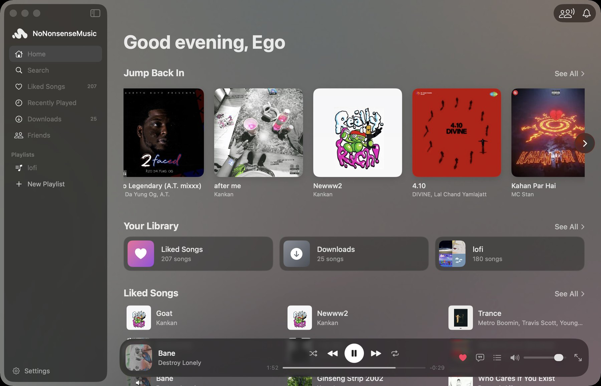
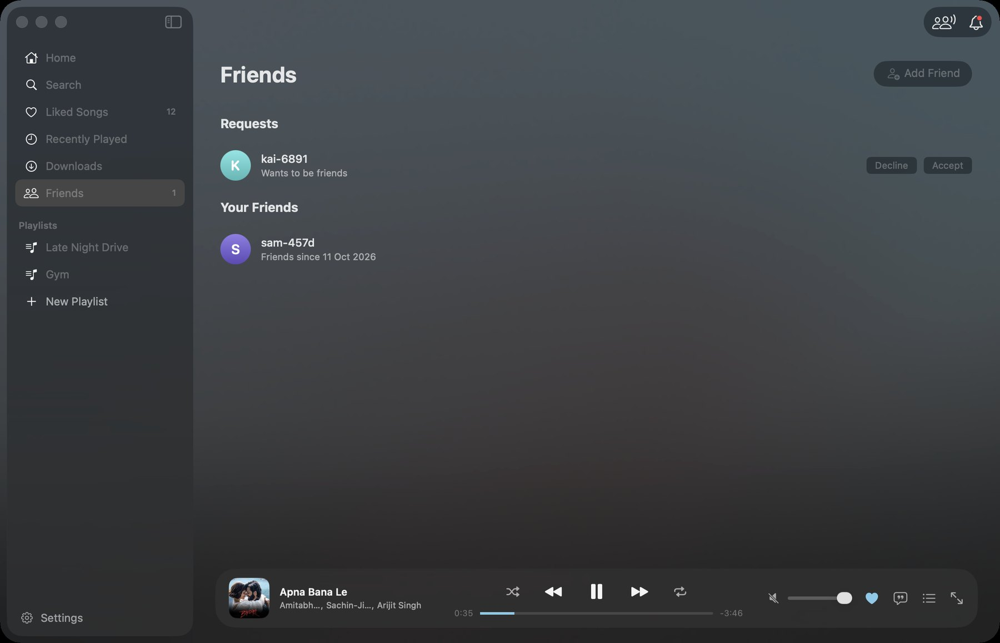
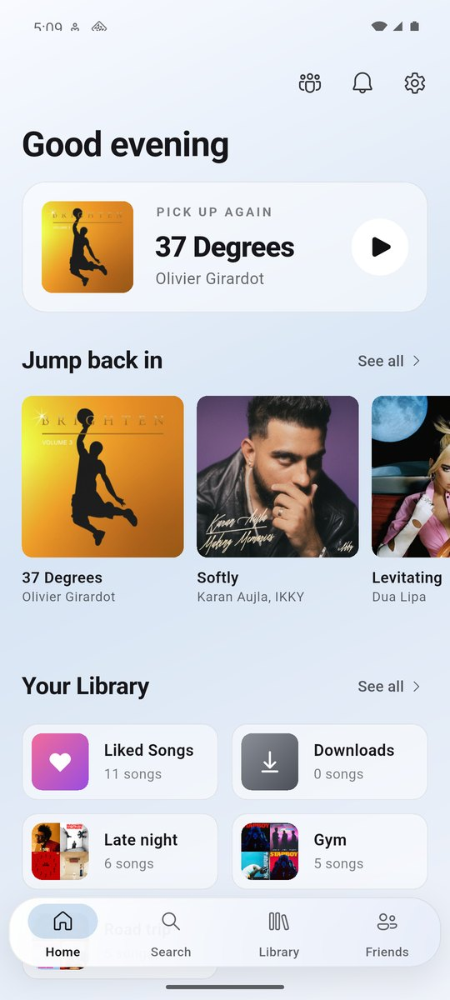
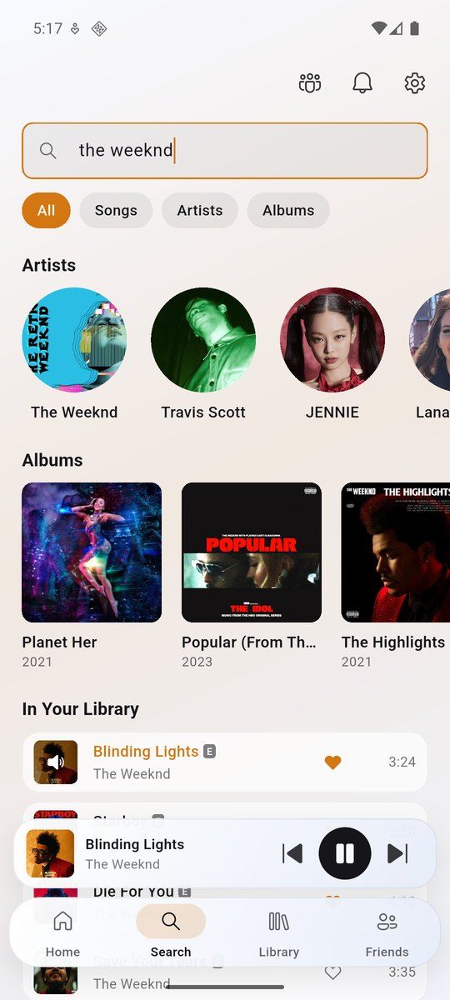
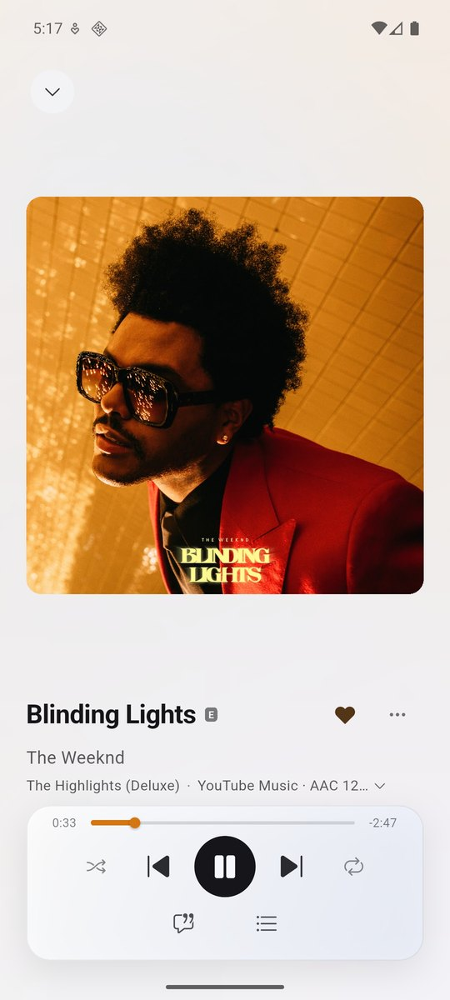
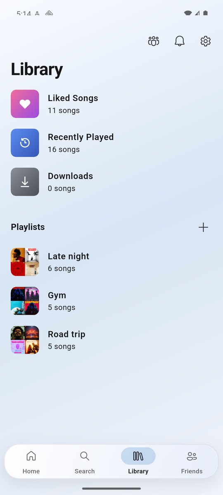
Android app (Flutter): home, search, now playing, library. Background playback with lock-screen controls and a home-screen widget.
Install the Mac, Windows or Android build from the latest GitHub release, point it at a server (uv run fastapi run src/music_backend/main.py with PostgreSQL), sign up two accounts and start a Jam: both devices play the same queue in step. Built with two contributors, credited in the README (Windows app and phone redesign).
Counts how many different people passed through an event from the footage of several cameras over several days. Built for a three-day event with more than 300,000 expected attendees.
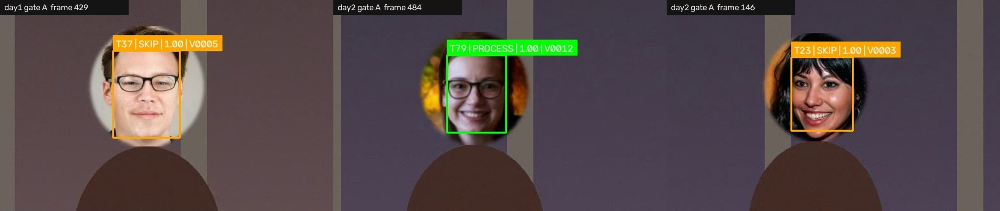
demo/run_demo.sh renders three camera clips of synthetic people walking past (with overlap between gates and returning visitors), runs the pipeline and checks the count against the known answer. Drop real footage in videos/ and run python main.py for the real thing.
The backend for a police complaints app: citizens verify their phone, file complaints with location and evidence, and track them; officers triage them from an admin side. The same shape as a patient app with a clinic back office.
$ python scripts/demo_walkthrough.py ▶ Citizen asks for an OTP HTTP 200 {"message": "OTP sent to 98******56", "expires_in": 300} ▶ A wrong OTP is rejected HTTP 400 {"detail": "Invalid OTP. 2 attempts remaining."} ▶ Right OTP → single-use action token HTTP 200 {"action_token": "DqE8Xtbu…", "expires_in": 300} ▶ Register, then log in from GPS HTTP 200 {"status": "success", "user": {"name": "Priya Raman", …}} ▶ Mismatched type and category HTTP 400 {"detail": "Category 'burglary' is not valid for complaint type 'cyber'"} ▶ Burglary complaint + geotagged photo HTTP 200 {"complaint_number": "CMP-2026-563983", "latitude": "12.97598", "longitude": "80.22121", "media_count": {"images": 1}} → script tag stripped before storage ▶ Officer: dashboard, queue, accept with note HTTP 200 {"status": "accepted", "admin_notes": "FIR registered. SI Karthik assigned; site visit today 5 pm."} ▶ Citizen sees the update ▶ Someone else's complaint HTTP 404 {"detail": "Complaint not found"} ▶ OTP flood from one client status codes: [200, 200, 200, 200, 429, 429, 429]
MySQL, python scripts/init_db.py, python -m scripts.seed_admin, uvicorn app.main:app, then python scripts/demo_walkthrough.py (output above). Every endpoint can be tried by hand at /policeapp/docs.
Gets an emergency call (type, message, GPS fix, place) from a phone with no signal to a rescue command centre, by relaying it across nearby devices over Bluetooth LE discovery, Wi-Fi multicast or sound (data-over-audio), until one has an uplink.
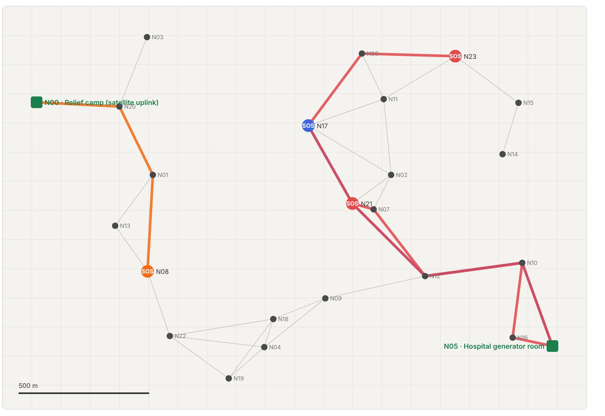
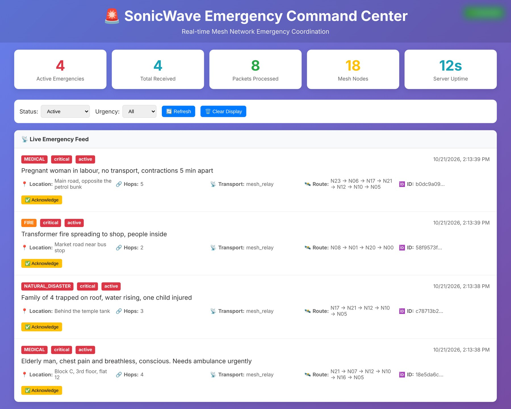
python emergency_server.py, then python demo/mesh_sim.py. The demo runs the project's real client (packet hashing, de-duplication, hop limit, relay decisions) on 24 simulated devices; only the radio is simulated, with 420 m range, jitter and 8% loss. The UDP and audio transports have their own laptop-to-laptop test scripts. Status: a working prototype, not yet a phone app; BLE is used for discovery, not yet for relaying.
Most day-to-day work is in private client repositories, so there are no screenshots here. The architecture of each can be walked through in detail.
Turns tender bundles of 40+ pages into structured requirement data that can be checked against the source.
An ETL engine in which LLM agents transform inconsistent source files into one schema, check their own output and correct it before it is loaded.
Agent pipelines behind an online learning platform.
A long-running agent runtime: governed input, an append-only SQLite event journal with deterministic replay, bounded working memory, and live model calls whose outputs are validated before they may change state. About 88,000 lines of Python with 64 test modules.
Unvelit (unvelit.in) was an anonymous forum for college students that our team built, launched and ran until it was sunset. Anonymous posting with image and video uploads is a risky combination, so every post passed through our own moderation service before anyone saw it. Paid moderation costs money per call, so a repost of something already moderated is recognised and its verdict reused.
The first version used 16-bit hashes, where about 60% of unrelated images look alike, so a new upload could inherit some other image's "pass". Moving to 64-bit hashes took wrong matches from 4 in 9 to 0 in 9 with the same repost detection, and old rows migrate automatically.
$ python demo/dedup_demo.py Stored as already moderated: 10 images (3 flagged, 7 passed) Reposts (should reuse the original verdict): recompressed (JPEG q=35) 10/10 dist 0-2/64 downscaled to 40% 10/10 dist 0-2/64 brightened +25% 10/10 dist 0-6/64 cropped 6% off each side 1/10 watermark strip added 3/10 34/50 caught: 34 moderation calls saved Never-seen images (should not match): 9/9 no match, nearest 16-24/64 bits away Previous scheme (16-bit): new images wrongly matched: 4/9 Current scheme: new images wrongly matched: 0/9
Perceptual hashes are built for re-encodes and resizes; crops need local features or embeddings, a natural next step.
The moderation engine runs on its own: MySQL, then python demo/dedup_demo.py, with no API keys needed (output above). With SightEngine and Gemini keys, uvicorn api:app serves the full moderation API.
An English-learning web app for ages 6 to 21: conversation practice with an AI tutor, spoken answers scored on fluency, pronunciation, grammar and vocabulary, grammar correction, lessons and quizzes, and a summary view for parents and teachers.
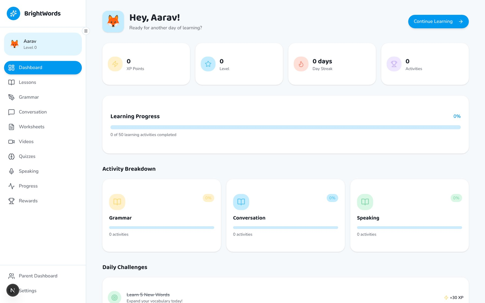
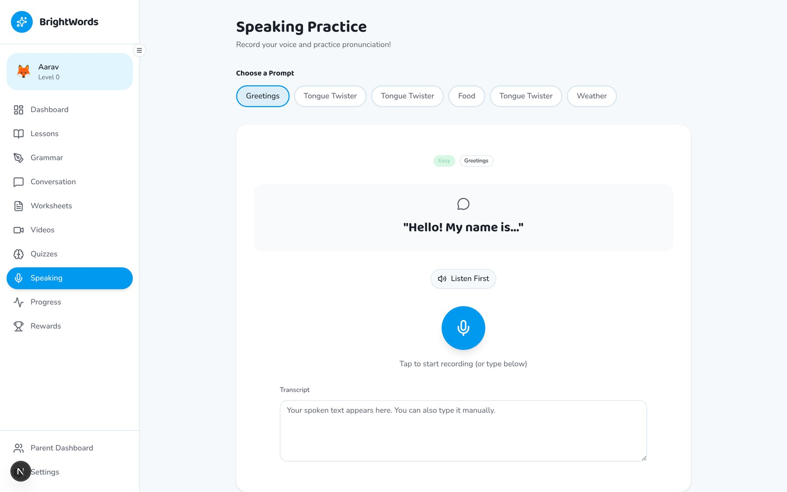
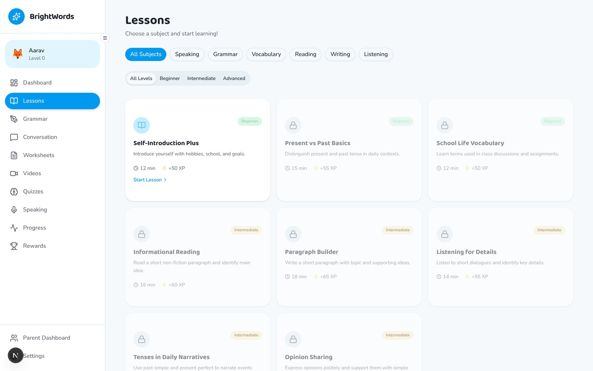
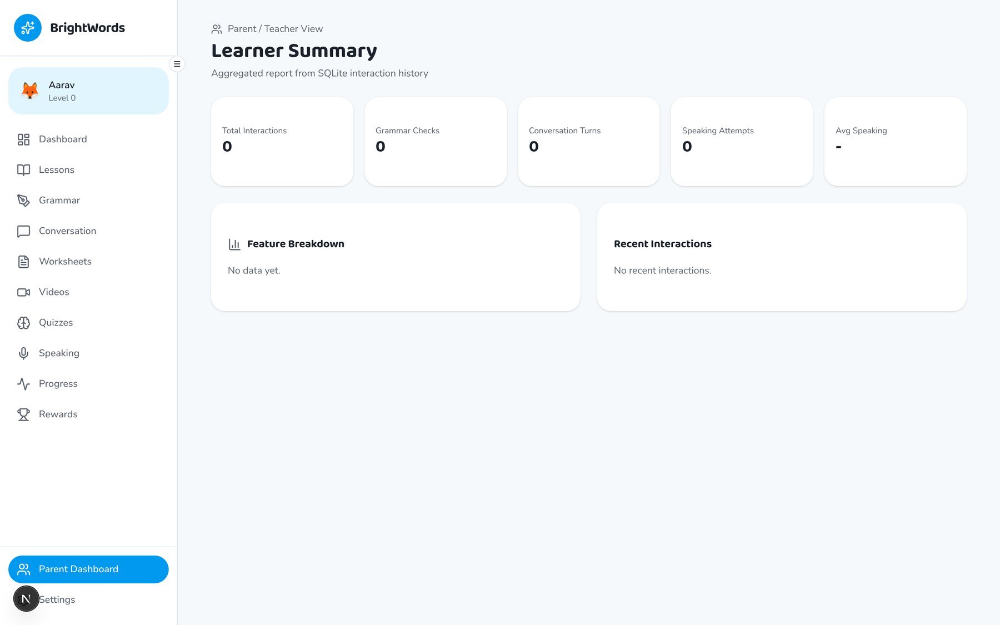
uvicorn app.main:app in backend/, npm run dev at the root, sign up, open Speaking. AI replies need an Ollama endpoint in backend/.env; without one the backend returns safe fallbacks so the rest of the app still works.
Three iterations of the same business problem, an assistant that answers from a company's own content and turns conversations into qualified leads, from a managed multi-client service to a single agent graph.
A managed chatbot service for many client businesses. An admin onboards a client and crawls their site into a vector store; the widget answers with RAG and detects leads through LLM function calling.
Celery workers run email and WhatsApp follow-up sequences that pause when the lead replies; typing TALK hands the chat to a human. Client dashboards show leads and chat history.
One knowledge base behind a website chatbot, a WhatsApp Business bot (Twilio) and a browser voice agent built on CrewAI, with all leads and transcripts in one dashboard.
Built from a full requirements specification and design document, with tests for the API, models, services and webhooks.
A LangGraph state machine for a SaaS sales funnel: inquiry, qualification, capture. RAG over pricing and features, slot filling into a typed state, structured output for the captured lead, and session memory through a checkpointer.
Chosen over a multi-agent framework because a sales funnel needs deterministic transitions. Ships with Docker.
A WebRTC media server in Node.js with streaming voice-activity detection and barge-in: when the caller starts speaking, the bot's reply is cut off, with a 300 ms target. Raw 16-bit, 16 kHz PCM with a 10 ms heartbeat that keeps the RTP stream alive during silence. Speech recognition and synthesis are stubs, ready for any STT/TTS provider.
Upload a CSV and ask in plain language; the agent writes pandas and Plotly code, runs it in a restricted sandbox (allow-listed imports, time limits) and returns interactive charts, statistics and insights.
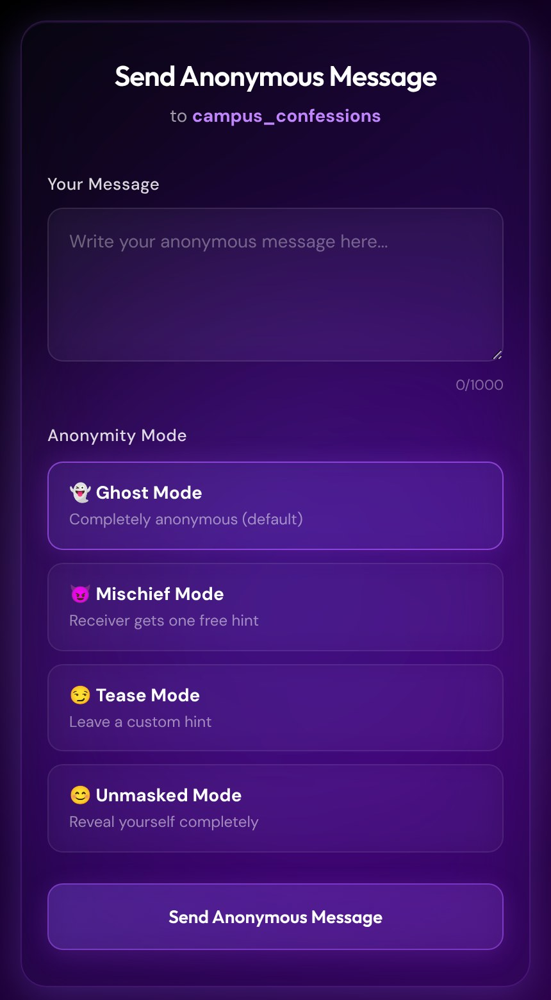
Anyone with a user's link can send them an anonymous message. The sender picks how anonymous to be: Ghost (fully anonymous), Mischief (the receiver gets one free hint), Tease (the sender leaves a custom hint) or Unmasked.
The receiver unlocks tiered hints about who sent it (level 1 to 3), built from browser data captured with the message, and earns hint credits by watching ads. The inbox supports starring, archiving and reporting; messages are moderated and rate-limited.
Matches people who can teach a skill with people who want to learn it: Sentence-BERT profile embeddings, skill overlap and hour-by-hour availability overlap combined into a score with a plain-language explanation; credit transactions between users.
Multi-label classification of 27 emotions over 58,000 Reddit comments with a BiLSTM and self-attention.
A plug-and-play "now playing" overlay for OBS, XSplit and Streamlabs, driven by Windows Media Player.
Python, TypeScript, Swift, Dart, C/C++, SQL · FastAPI, Flask, Next.js, React, SwiftUI, Flutter · PostgreSQL, MySQL, SQLite, Supabase, Redis, Celery · PyTorch, LangChain, LangGraph, CrewAI, RAG, ChromaDB, pgvector · WebSockets, WebRTC · Docker.